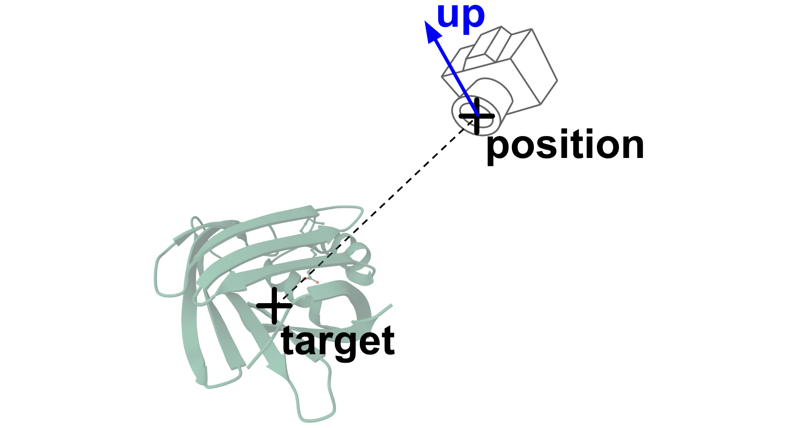
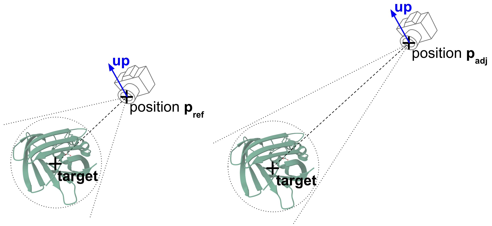
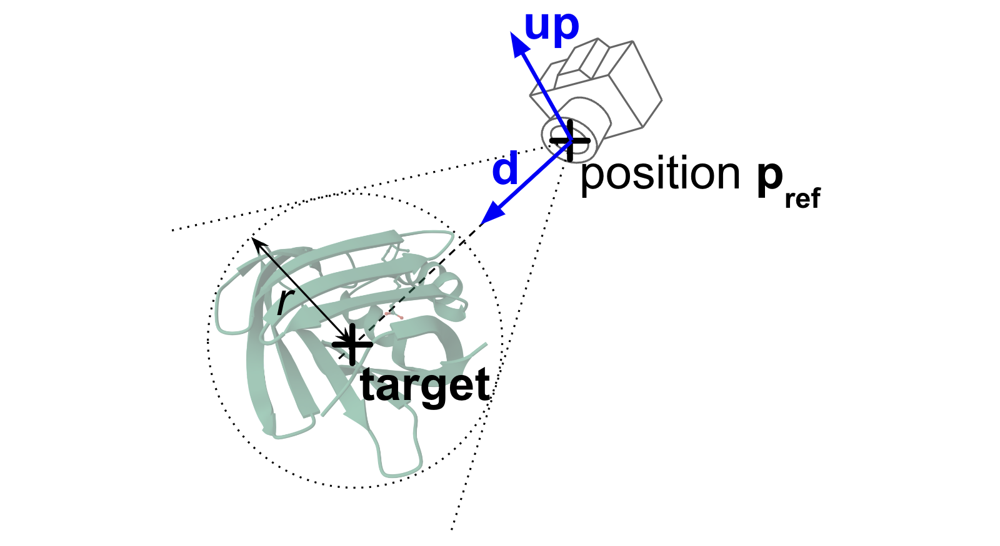

MVS camera settings
Camera position and orientation in MVS views can be adjusted in two ways: using a camera node or a focus node. Global attributes of the MVS view unrelated to camera positioning can be adjusted via a canvas node.
camera node
This node instructs to directly set the camera position and orientation. This is done by passing target, position, and optional up vector. The camera node is placed as a child of the root node (see MVS tree schema).

However, if the target and position vectors were interpreted directly, the resulting view would wildly depend on the camera field of view (FOV). For example, assume we have a sphere with center in the point [0,0,0] and radius 10 Angstroms, and we set target=[0,0,0] and position=[0,0,20]. With a camera with vertical FOV=90°, the sphere will fit into the camera's view nicely, with some margin above and under the sphere. But with a camera with vertical FOV=30°, the top and bottom of sphere will be cropped. To avoid these differences, MVS always uses position of a "reference camera" instead of the real camera position.
We define the "reference camera" as a camera with such FOV that a sphere with radius R viewed from distance 2R (from the center of the sphere) will just fit into view (i.e. there will be no margin but the sphere will not be cropped). This happens to be FOV = 2 arcsin(1/2) = 60° for perspective projection, and FOV = 2 arctan(1/2) ≈ 53° for orthographic projection.
When using perspective projection, the real camera distance from target and the real camera position can be calculated using these formulas:
\(d _\mathrm{adj} = d _\mathrm{ref} \cdot \frac{1}{2 \sin(\alpha/2)}\)
\(\mathbf{p} _\mathrm{adj} = \mathbf{t} + (\mathbf{p} _\mathrm{ref} - \mathbf{t}) \cdot \frac{1}{2 \sin(\alpha/2)}\)
Where \(\alpha\) is the vertical FOV of the real camera, \(d _\mathrm{ref}\) is the reference camera distance from target, \(d _\mathrm{adj}\) is the real (adjusted) camera distance from target, \(\mathbf{t}\) is the target position, \(\mathbf{p} _\mathrm{ref}\) is the reference camera position (the value in the MVS file), and \(\mathbf{p} _\mathrm{adj}\) is the real (adjusted) camera position.
When using orthographic projection, the formulas are slightly different:
\(d _\mathrm{adj} = d _\mathrm{ref} \cdot \frac{1}{2 \tan(\alpha/2)}\)
\(\mathbf{p} _\mathrm{adj} = \mathbf{t} + (\mathbf{p} _\mathrm{ref} - \mathbf{t}) \cdot \frac{1}{2 \tan(\alpha/2)}\)
The following image illustrates the camera position adjustment (left: reference camera with FOV=60°, right: real camera with FOV=30° must be positioned further from the target to obtain a similar view):

Using the example above (target=[0,0,0] and position=[0,0,20]), we can calculate that the real camera position will have to be set to:
- [0, 0, 14.14] for FOV=90° (perspective projection)
- [0, 0, 20] for FOV=60° (perspective projection)
- [0, 0, 38.68] for FOV=30° (perspective projection)
Note that for orthographic projection this adjustment achieves that the resulting view does not depend on the FOV value. For perspective projection, this is not possible and there will always be some "fisheye effect", but still it greatly reduces the dependence on FOV and avoids the too-much-zoomed-in and too-much-zoomed-out views when FOV changes.
The up vector describes how the camera should be rotated around the position-target axis, i.e. it is the vector in 3D space that will be point up when projected on the screen. For this, the up vector must be perpendicular to the position-target axis. However, the MVS specification does not require that the provided up vector be perpendicular. This can be solved by a simple adjustment:
\(\mathbf{u} _\mathrm{adj} = \mathrm{normalize} ( ((\mathbf{t}-\mathbf{p}) \times \mathbf{u}) \times (\mathbf{t}-\mathbf{p}) )\)
Where \(\mathbf{u}\) is the unadjusted up vector (the value in the MVS file), \(\mathbf{u} _\mathrm{adj}\) is the adjusted up vector, \(\mathbf{t}\) is the target position, and \(\mathbf{p}\) is the camera position (can be either reference or adjusted camera position, the result will be the same).
If the up vector parameter is not provided, the default value ([0, 1, 0]) will be used (after adjustment).
focus node
The other way to adjust camera is to use a focus node. This node is placed as a child of a component node and instructs to set focus to the parent component (zoom in). This means that the camera target should be set to the center of the bounding sphere of the component, and the camera position should be set so that the bounding sphere just fits into view (vertically and horizontally).
By default, the camera will be oriented so that the X axis points right, the Y axis points up, and the Z axis points towards the observer. This orientation can be changed using the optional vector parameters direction and up (see MVS tree schema). The direction vector describes the direction from the camera position towards the target position (default [0, 0, -1]). The meaning of the up vector is the same as for the camera node and the same adjustment applies to it (default [0, 1, 0]).
The reference camera position for a focus node can be calculated as follows:
\(\mathbf{p} _\mathrm{ref} = \mathbf{t} - \mathrm{normalize}(\mathbf{d}) \cdot 2 r \cdot \max(1, \frac{h}{w})\)
Where \(\mathbf{t}\) is the target position (center of the bounding sphere of the component), \(r\) is the radius of the bounding sphere of the component, \(\mathbf{d}\) is the direction vector, \(h\) is the height of the viewport, \(w\) is the width of the viewport, and \(\mathbf{p} _\mathrm{ref}\) is the reference camera position (see explanation above).
The following image illustrates the camera position calculation to fit the bounding sphere of a structure:

Applying the FOV-adjustment formulas from the previous section, we can easily calculate the real position that we have to set to the camera (\(\mathbf{p} _\mathrm{adj}\)):
For perspective projection: \(\mathbf{p} _\mathrm{adj} = \mathbf{t} - \mathrm{normalize}(\mathbf{d}) \cdot \frac{r}{\sin(\alpha/2)} \cdot \max(1, \frac{h}{w})\)
For orthographic projection: \(\mathbf{p} _\mathrm{adj} = \mathbf{t} - \mathrm{normalize}(\mathbf{d}) \cdot \frac{r}{\tan(\alpha/2)} \cdot \max(1, \frac{h}{w})\)
canvas node
Attributes that apply to the MVS view as a whole, but are not related to camera positioning, can be set using a canvas node. This node is placed as a child of the root node (see MVS tree schema).
Currently, this only includes one parameter: background_color. Its value can be set to either a X11 color (e.g. "red"), or a hexadecimal color code (e.g. "#FF0011"). If there is no canvas node, the background will be white.